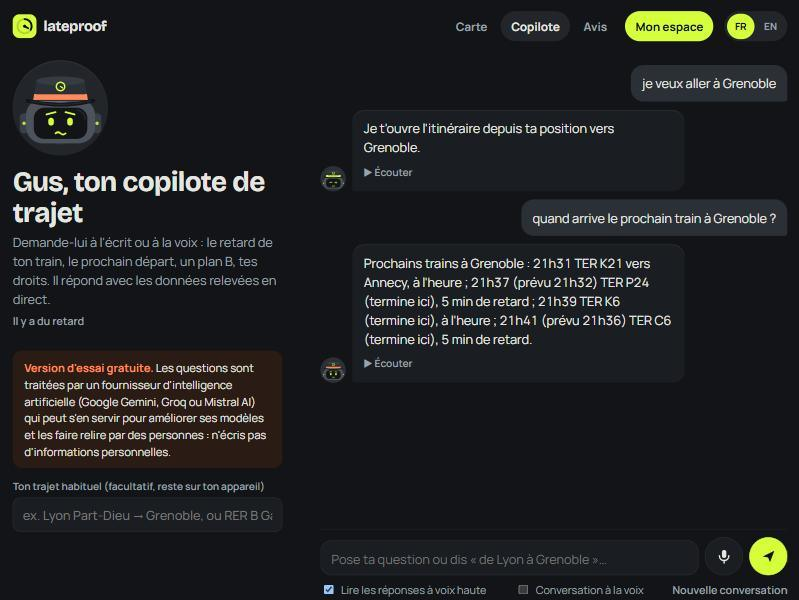
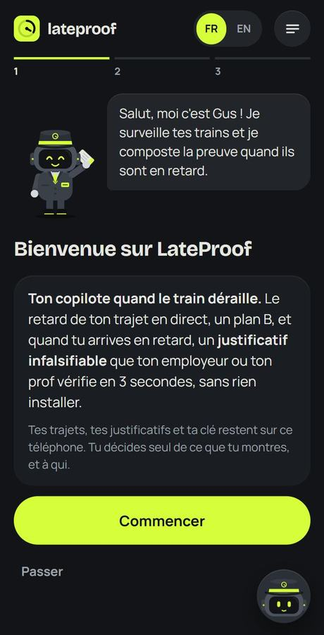
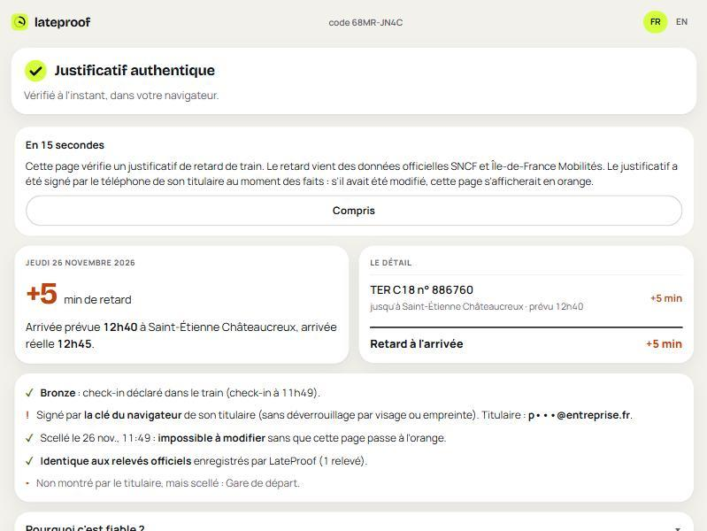

L'alerte et le plan B
Grève annoncée, train supprimé, correspondance compromise : tu es prévenu, et le copilote te dit quel train prendre à la place.
Parler à Gus →
LateProof suit ton trajet en direct, te donne le plan B avant tout le monde, et prouve ton retard avec un simple lien que ton manager vérifie en 3 secondes, sans rien installer.
Aujourd'hui en France — trains suivis — en retard de 15 min ou plus — supprimés relevé toutes les 2 min · — Voir la carte en direct →
Avec LateProof, tu as
Grève annoncée, train supprimé, correspondance compromise : tu es prévenu, et le copilote te dit quel train prendre à la place.
Parler à Gus →
« Je suis à bord » : LateProof sait quel train tu prends et suit son retard minute par minute, même avec des correspondances.

Un justificatif signé par ton téléphone, comparé aux données officielles. Ton manager ou ton prof le vérifie en 3 secondes. Et on te dit à quoi tu as droit.

Tous les trains SNCF (TGV, Intercités, TER) et, en Île-de-France, les RER et Transilien, relevés à partir des données officielles.
Voir la carte →Appuie sur « Étape suivante » pour suivre un trajet, du quai jusqu'au justificatif.
Chaque avis est relu avant d'être publié, avec le prénom choisi par son auteur. Aucun n'est inventé.
Tu as utilisé LateProof sur un trajet ? Dis-nous en quelques lignes ce qui a marché, ou pas.
Fini les « mon train était en retard » invérifiables. Les justificatifs de vos équipes se vérifient en un clic, sans compte ni installation. Un espace pour les recevoir arrive.
Un e-mail quand une grosse nouveauté arrive : appli installable, alertes du matin, offre entreprise. Rien d'autre.
L'essentiel est gratuit : retards en direct, check-in et justificatifs. Une formule Pro (prix indicatif : 5,99 € par mois ou 49 € par an) ajoutera le copilote complet, les alertes du matin et la voix. Pour les entreprises, une offre par salarié.
Il est signé par ton téléphone au moment du trajet, comparé aux relevés officiels SNCF et Île-de-France Mobilités, et la moindre retouche se voit. Et chaque nuit, l'empreinte de tous les relevés de la veille est publiée sur Solana (réseau de test pendant le hackathon) : personne, pas même nous, ne peut les modifier après coup sans que ça se voie.
Elle sert uniquement, sur ton téléphone, à reconnaître ta gare au moment du check-in. Tes trajets et justificatifs restent sur ton appareil.
Tous les trains SNCF en France (TGV, Intercités, TER), et en Île-de-France les RER et Transilien. Pour le métro et le tram, on suit la régularité, mais pas encore de justificatif : ils ne publient pas d'horaires.
Le conseil de trajet et l'état du réseau en direct, payés à l'appel en USDC sur Solana, sans compte ni clé d'API.